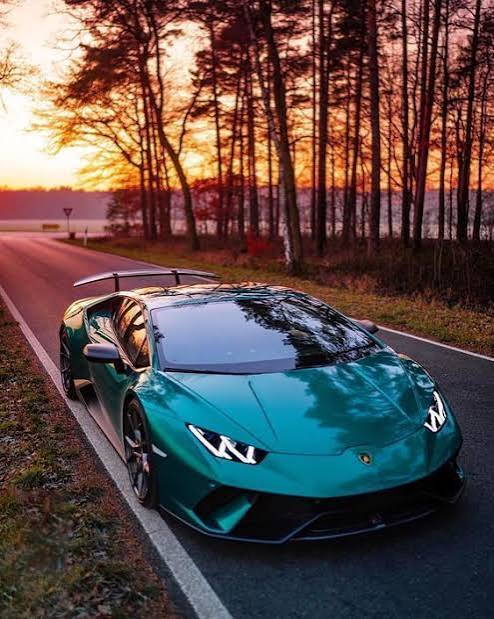
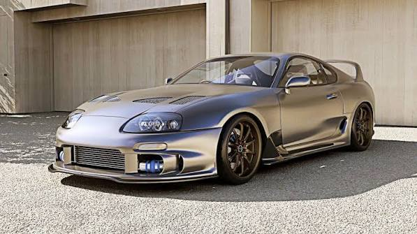
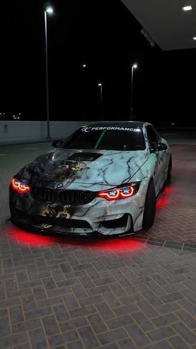
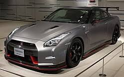

| Model | Engine Type | 0–100 km/h Sprint | Top Speed |
|---|---|---|---|
| Urus SE | 4.0L Twin-Turbo V8 Plug-In Hybrid | 3.4 seconds | 312 km/h |
| Temerario | 4.0L Twin-Turbo V8 Plug-In Hybrid | 2.7 seconds | 343 km/h |
| Revuelto | 6.5L Naturally Aspirated V12 Plug-In Hybrid | 2.5 seconds | >350 km/h |

| Model | Engine Type | 0–100 km/h Sprint | Top Speed |
|---|---|---|---|
| Supra MK4 Twin-Turbo (Export / US-Spec) | 3.0L Twin-Turbo Inline-6 (2JZ-GTE) | ~4.9 seconds | 250 km/h (Capped) / 277 km/h (Delimited) |
| Supra MK4 Twin-Turbo (Japanese Spec) | 3.0L Twin-Turbo Inline-6 (2JZ-GTE) | ~5.1 seconds | 180 km/h (Electronically Capped) |
| Supra MK4 Naturally Aspirated | 3.0L Naturally Aspirated Inline-6 (2JZ-GE) | ~6.5 seconds | 210 km/h |

| Model | Engine Type | 0–100 km/h Sprint | Top Speed |
|---|---|---|---|
| BMW M4 Standard (Manual) | 3.0L Twin-Turbo Inline-6 (S58) | ~4.2 seconds | 250 km/h (290 km/h unlocked) |
| BMW M4 Competition Coupé | 3.0L Twin-Turbo Inline-6 (S58) | 3.5 seconds | 250 km/h (290 km/h unlocked) |
| BMW M4 CS (Track-focused) | 3.0L Twin-Turbo Inline-6 (S58) | 3.2 seconds | 302 km/h |

| Model | Engine Type | 0–100 km/h Sprint | Top Speed |
|---|---|---|---|
| GT-R (CBA-R35) (2007–2010) | 3.8L Twin-Turbo V6 (VR38DETT) | ~3.2 – 3.5 seconds | 315 km/h |
| GT-R (DBA-R35) (2011–2016) | 3.8L Twin-Turbo V6 (VR38DETT) | ~2.9 – 3.0 seconds | 315 km/h |
| GT-R (4BA-R35) (2017–2025) | 3.8L Twin-Turbo V6 (VR38DETT) | ~2.7 – 2.9 seconds | 328 km/h |